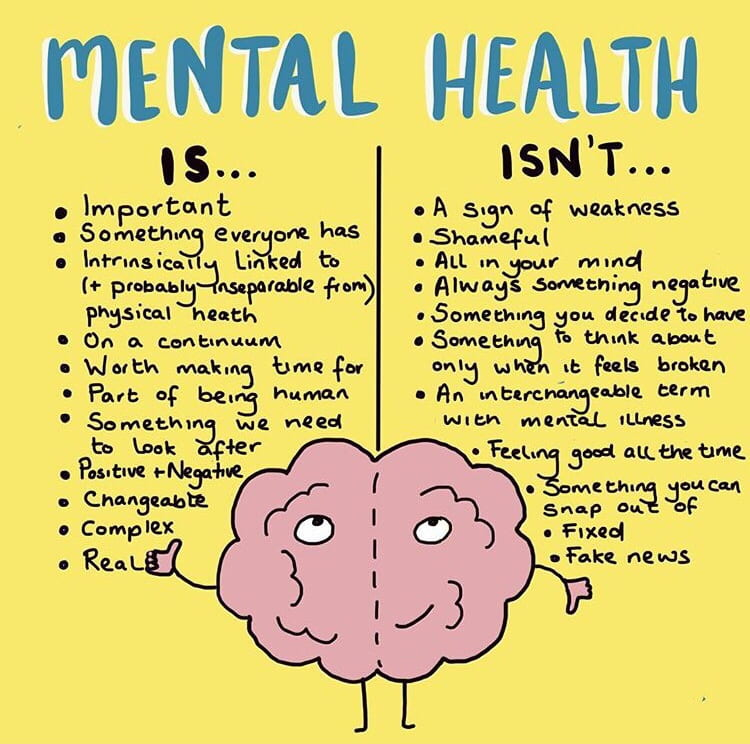
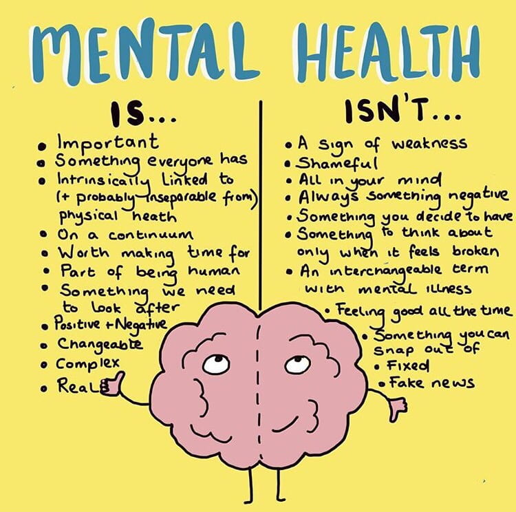

Mental Health
Mental health refers to cognitive, behavioral, and emotional well-being. It is all about how people think, feel, and behave. People sometimes use the term “mental health” to mean the absence of a mental disorder. Mental health can affect daily living, relationships, and physical health.
 

However, this link also works in the other direction. Factors in people’s lives, interpersonal connections, and physical factors can all contribute to mental health disruptions.
Looking after mental health can preserve a person’s ability to enjoy life. Doing this involves reaching a balance between life activities, responsibilities, and efforts to achieve psychological resilience.
Conditions such as stress, depression, and anxiety can all affect mental health and disrupt a person’s routine.